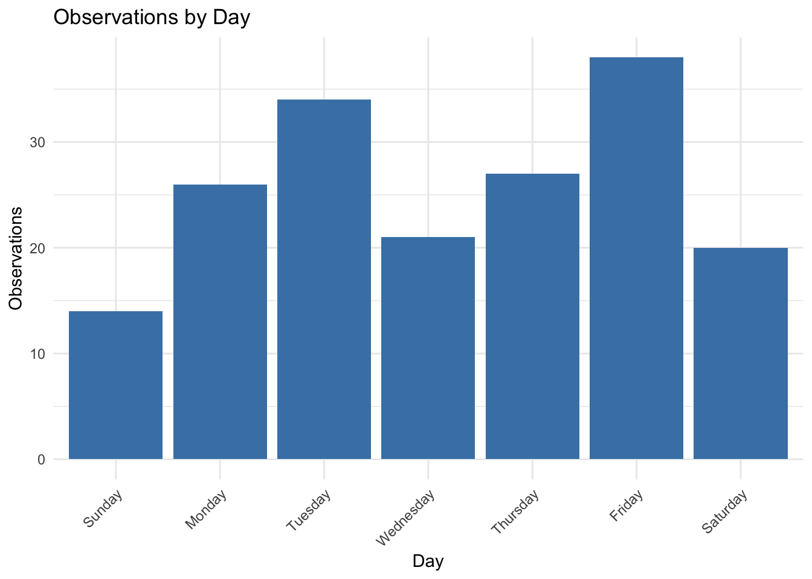
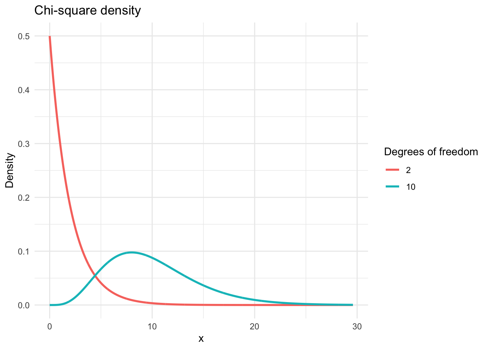

lower<-qbinom(.025,180,.7)/180
upper<-qbinom(.975,180,.7)/180
print(paste("95% CI is: (",lower,upper,")"))[1] "95% CI is: ( 0.633333333333333 0.766666666666667 )"Example: A species of crocodile nests in sandy riverbanks, and the sex of the hatchlings is determined by the temperature of the surrounding sand during incubation. Historically, typical nest depths and shading produced an approximately 50:50 male-female sex ratio. Recently, hotter seasons and reduced vegetation cover are suspected to be warming the sand and shifting the sex ratio.
Researchers recorded the sex of 180 hatchlings emerging from sandy nests along a river in northern Australia. In their sample, 54 hatchlings were male and 126 were female.
What is the estimate of the proportion of female crocodiles in this population?
The sample proportion:
\[ \hat{p}=\frac{x}{n}=\frac{126}{180}=0.7 \]
How precise is this estimate?
We can measure precision using the standard error of the estimated proportion:
\[ SE(\hat{p})=\sqrt{\frac{\hat{p}(1-\hat{p})}{n}}=0.034 \]
What is the “exact” 95% confidence interval of the population proportion?
In our example:
lower<-qbinom(.025,180,.7)/180
upper<-qbinom(.975,180,.7)/180
print(paste("95% CI is: (",lower,upper,")"))[1] "95% CI is: ( 0.633333333333333 0.766666666666667 )"An alternative approximate CI is
\[ \hat{p}\pm 1.96 SE(\hat{p}) \] That is:
phat<-126/180
se<-sqrt(phat*(1-phat)/180)
lower<-phat-1.96*se
upper<-phat+1.96*se
print(paste("95% CI is: (",lower,upper,")"))[1] "95% CI is: ( 0.633053254995731 0.766946745004269 )"where \(1.96\) is the 0.975 quantile of the standard normal distribution.
However a common approximation is the Agresti-Coull approximation that estimates the population proportion by
\[ \tilde{p}=\frac{x+2}{n+4}=\frac{128}{184}=0.696 \]
with
\[ SE_{\tilde{p}}=\sqrt{\frac{\tilde{p}(1-\tilde{p})}{n+4}}=0.033 \] and 95% confidence interval: \[ \hat{p}\pm 1.96SE_\tilde{p} \]
n<-180
tilde_p<-128/184
se<-sqrt(tilde_p*(1-tilde_p)/(n+4))
print(paste("95% CI is: (",tilde_p-1.96*se,tilde_p+1.96*se,")"))[1] "95% CI is: ( 0.629166460204054 0.762137887622033 )"Example 2: A study of 25 genes involved in spermatogenesis found their locations in the mouse genome. The study was carried out to test a prediction of evolutionary theory that such genes should occur disproportionately often on the X chromosome. As it turned out, 10 out of 25 spermatogenesis genes (40%) were on the X chromosome. If genes for spermatogenesis occurred “randomly” throughout the genome, then we would expect only 6.1% of them to fall on the X chromosome, because the X chromosome contains 6.1% of the genes in the genome. Do the results support the hypothesis that spermatogenesis genes occur preferentially on the x chromosome?
\(H_{0}: p=0.061\), the probability that a spermatogenesis gene falls on the X chromosome is \(.061\).
\(H_{A}: p \neq 0.061\)
pval<-2*(1-pbinom(9,25,.061))
pval[1] 1.987976e-06This p-value is below the significance level of \(\alpha=.05\), therefore, we reject the null hypothesis and conclude that there is a disproprotionate number of spermatogenesis genes on the X chromosome.
The binomial test just introduced is an example of goodness-of-fit test. A goodness-of-fit test is a method for comparing an observed frequency distribution with the frequency distribution that would be expected under a simple probability model governing the occurence of different outcomes. In particular, we will use a test statistic called \(\chi^2\) (chi squared) calculated as follows:
\[ \chi^{2}=\sum_{i}\frac{(\text{Observed}_{i}-\text{Expected}_{i})^2}{\text{Expected}_{i}} \]
Where \(\text{Observed}_{i}\) is the frequency of individuals observed in the \(i\)-th category and \(\text{Expected}_{i}\) is the frequency expected in that category under the null hypothesis.
The observe data
day<-c("Sunday","Monday","Tuesday","Wednesday","Thursday","Friday","Saturday")
obs<-c(14,26,34,21,27,38,20)
obsp<-obs/sum(obs)
df <- data.frame(day = factor(day, levels = day), obs = obs)
library(ggplot2)
ggplot(df, aes(x = day, y = obs)) +
geom_col(fill = "steelblue") +
labs(x = "Day", y = "Observations", title = "Observations by Day") +
theme_minimal() +
theme(axis.text.x = element_text(angle = 45, hjust = 1))
Under the proportional model (null hypothesis), the number of births on Monday is proportional to the number of Mondays in 2016. \(H_{0}:\) The frequency of births on each day of the week is proportional to the number of times that day occurs in the year
\(H_{A}:\) The frequency of births on each day of the week is NOT proportional to the number of times that day occurs in the year
The expected proportion under the null is then:
exp<-c(52,52,52,52,52,53,53)*180/366
chi_square<-sum ((obs-exp)^2 / exp)
chi_square[1] 15.79465The null distribution of the \(\chi^{2}\) statistic is well approximated by the theoretical \(\chi^2\) distribution with degrees of freedom calculated as follows:
\[ df=\text{Num. of categories} - 1 = \text{Num. of parameters estimated from the data} \]
# Chi-square distributions with df = 10 and df = 20
df_vals <- c(2, 10)
# x-range covering essentially all mass for both
x <- seq(0, qchisq(0.999, df = max(df_vals)), length.out = 2000)
library(ggplot2)
dat <- data.frame(
x = rep(x, times = length(df_vals)),
df = factor(rep(df_vals, each = length(x))),
density = c(dchisq(x, df = 2), dchisq(x, df = 10))
)
ggplot(dat, aes(x = x, y = density, color = df)) +
geom_line(linewidth = 1) +
labs(
title = "Chi-square density",
x = "x",
y = "Density",
color = "Degrees of freedom"
) +
theme_minimal()
Calculating the p-value
For the \(\chi^2\) goodness-of-fit test, the p-value is the probability of getting a \(\chi^2\) value greater than the observed test value calculated from the data (why?).
pval<-1-pchisq(chi_square,df=6)
pval[1] 0.01489962At the standard significance level of \(\alpha=0.05\), such a small p-value leads us to reject the null hypothesis.
Assumptions:
Individuals in the data set are a random sample from the whole population
None of the categories should have an expected frequency less than one
No more than 20% of the categories should have expected frequencies less than five
If one of these conditions is not met, then we can combine some of the categories with small expected frequencies.
# Contingency table: rows = (Success, No success), cols = (Real, Sham)
tab <- matrix(
c(41, 8,
15, 11),
nrow = 2, byrow = FALSE,
dimnames = list(
Outcome = c("Success", "No success"),
Group = c("Real", "Sham")
)
)
#tab
addmargins(tab) # show row/column totals Group
Outcome Real Sham Sum
Success 41 15 56
No success 8 11 19
Sum 49 26 75The focus of interest in a contingency table is the dependence or association between the column variable and the row variable (between treatment and response). Under the null hypothesis, there is no such association.
\(H_{0}:P(\text{Success}\mid \text{Real})=P(\text{Success}\mid \text{Sham})\)
\(H_{A}:P(\text{Success}\mid \text{Real}) \neq P(\text{Success}\mid \text{Sham})\)
Under the null, the estimated success rate is \(56/75=0.746\) and so, th expected values are:
exp<-matrix(0,nrow=2,ncol=2)
exp[1,]<-c(49*56/75,26*56/75)
exp[2,]<-c(49,26)-exp[1,]
exp [,1] [,2]
[1,] 36.58667 19.413333
[2,] 12.41333 6.586667Then, the chi-square statistic is
chi<-sum(((exp-tab)^2)/exp)
chi[1] 6.061864pval<-1-pchisq(chi,df=1)
pval[1] 0.01381318Thus, we reject the null and find that the data provide sufficient evidence to conclude that the real surgery is better than the sham surgery for reducing migraine headache.
tab <- matrix(
c(726, 3129,
131, 2814),
nrow = 2, byrow = FALSE,
dimnames = list(
Eye_Color = c("Dark", "Light"),
Hair_Color = c("Dark", "Light")
)
)
#tab
addmargins(tab) Hair_Color
Eye_Color Dark Light Sum
Dark 726 131 857
Light 3129 2814 5943
Sum 3855 2945 6800\(H_{0}:\) Eye color is independent of hair color
\(H_{A}:\) Eye color and is not independent of hair color
exp<-matrix(0,nrow=2,ncol=2)
exp[1,]<-c(3855*857/6800,2945*857/6800)
exp[2,]<-c(3855,2945)-exp[1,]
exp [,1] [,2]
[1,] 485.8434 371.1566
[2,] 3369.1566 2573.8434chi<-sum(((exp-tab)^2)/exp)
chi[1] 313.6315pval<-1-pchisq(chi,df=1)
pval[1] 0We reject the null hypothesis.